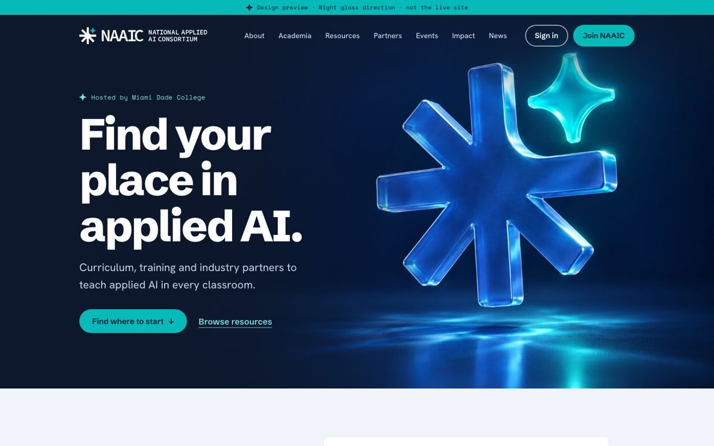
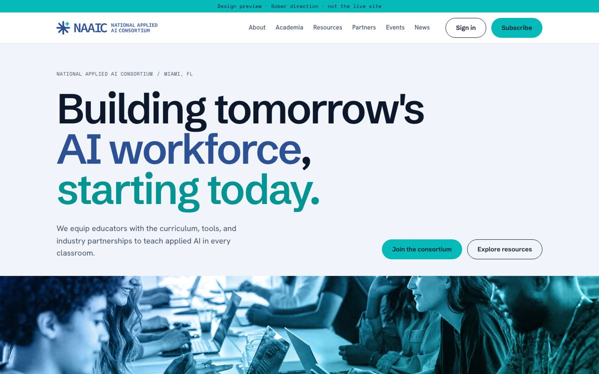

Design preview · October 2026
Two directions for the new naaic.ai
Each direction shows the same three pages: Home, Events and the Resource Hub. Both use NAAIC's blue, navy and aqua, and both are built to meet WCAG 2.2 AA accessibility. Click through, try them on your phone, and tell us which direction you prefer.

A · Night glass
Deep navy, with the NAAIC icon rendered as lit glass. Bold and premium. The icon's sparkle marks open resources and key moments.
Open Night glass
B · Sober
Light and calm, close to the first proposal, with every fix from our review: mobile menu, clearer text, the real logo and Open/EDU labels.
Open SoberGood to know
- These are design previews, not the live site. Links to pages outside these three go nowhere yet.
- Photos marked "NAAIC photo here" will use real NAAIC photography.
- Event dates, resources and the map shading are sample content. The live site will use NAAIC's CMS and Google Sheet.
- Filters on Events and Resources work, so you can try them.
- Night glass also has a light home hero. Use the "Home hero: Dark / Light" switch in the top bar, or open the light version.